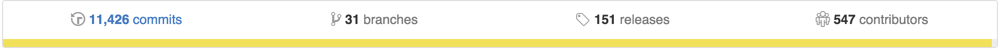
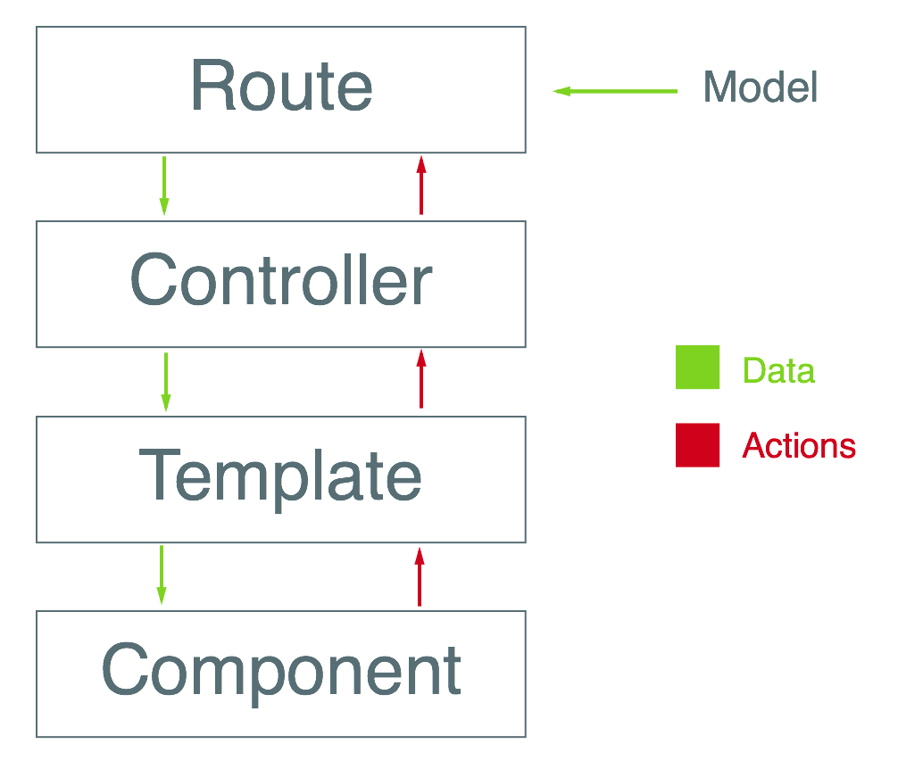

Un framework para aplicaciones ambiciosas
Luis Mendoza | @luismendozamx
¿Por qué tantos frameworks JS?
Server-Side rendering no siempre funciona
Client-Side es lo de hoy
Hola

Un poco de historia
Originalmente SproutCore 2.0
Creado por Yehuda Katz y Tom Dale en 2011
Principios de Diseño
Antes MVC, ahora MRCC*
Convention Over Configuration
* MRCC es un término mío, no es oficialDe
MVC: Modelo - Vista - Controlador
a
MRCC: Modelo - Ruta - Controlador - Componente
MVC: Modelo - Vista - Controlador
Problema: Se volvio complejo y difícil de escalar.
MVC: Modelo - Vista - Controlador
Modelo: Representación de datos
Ruta: Cargar modelo, vista y controlador
Template: Definición de markup
Controlador: Conexión entre datos y template
Vista: Conexión al DOM y manejo de eventos
MRCC: Modelo - Ruta - Controlador - Componente
Influencia de React y Web Components
MRCC: Modelo - Ruta - Controlador - Componente
Ventajas: Reutilizable, aislado, menos redundate, menos confuso, más fácil de mantener.
Modelo - Ruta - Controlador - Componente
El Ecosistema de Ember.js
ember-data
ember-cli
ember-inspector
ember-cli
Utilidad de línea de comandos para el desarrollo
$ ember new todo-app
$ ember generate model todo
$ ember serve
$ ember build
ember-data
Utilizada para manejar la información y estado de los modelos.
// Model
var todo = DS.Model.extend({
title: DS.attr('string'),
completed: DS.attr('booolean')
});
// Store
this.store.findAll('todo');
Arquitectura de Ember
Router
Modelos
Rutas
Controladores
Templates
Componentes
Router
/todos
/todos/:todo_id
Router.map(function() {
this.route('todo', function() {
this.route('show', {path: ':todo_id'});
});
});
Modelos
// models/todo.js
import DS from 'ember-data';
export default DS.Model.extend({
title: DS.attr('string'),
completed: DS.attr('boolean'),
description: DS.attr('string'),
list: DS.belongsTo('list')
});
Ruta
// routes/todos/index.js
import Ember from 'ember';
export default Ember.Route.extend({
model() {
return this.store.findAll('todo');
},
beforeModel() {
// código ejecutado antes de resolver el modelo
},
actions: {
updateTodo(todo) {
todo.save();
}
}
});
Controlador
/todos?page=1&sort=createdAt
// controllers/todos/index.js
import Ember from 'ember';
export default Ember.Controller.extend({
queryParams: ['page', 'sort'],
page: 1,
sort: 'createdAt',
asc: false,
actions: {
toggleSortDirection() {
this.toggleProperty('asc');
}
}
});
Templates
{{! templates/todos/index.hbs }}
{{#each model as |todo|}}
<div>
<p>{{todo.title}}</p>
</div>
{{/each}}
Componentes
// components/add-todo-form.js
import Ember from 'ember';
export default Ember.Component.extend({
todo: null,
actions: {
saveTodo(todo) {
todo.save().then(() => {
// success
}, () => {
// error
});
}
}
});
Componentes
{{! templates/components/add-todo-form.hbs }}
<form {{action 'saveTodo' todo on='submit'}}>
{{input value=todo.title}}
</form>
Componentes
Uso del componente
{{! templates/todos/index.hbs }}
{{add-todo-form todo=model}}